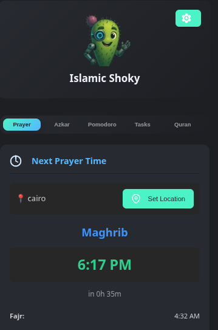
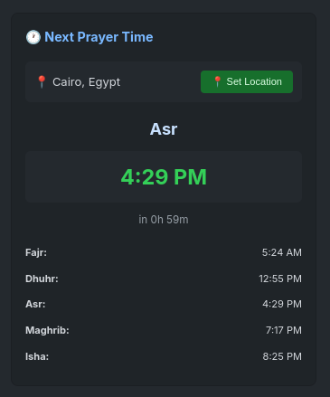
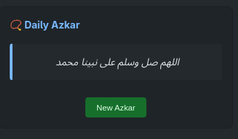
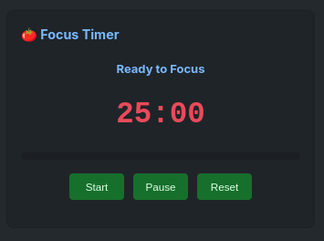
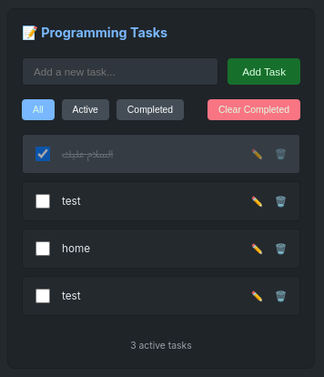

Spiritual Presence
Prayer time awareness, azkar reminders, and Quran recitation support are always one click away.
For Muslim Developers
Islamic Shoky is a VS Code extension that brings prayer times, Quran listening, daily azkar, focused work sessions, and task tracking into one spiritual productivity workspace.

What Is Islamic Shoky?
Islamic Shoky combines spiritual routines and productivity tools so you can code with barakah, structure, and less context switching.
Prayer time awareness, azkar reminders, and Quran recitation support are always one click away.
Built-in Pomodoro focus sessions and break cycles help protect your concentration and energy.
Todo tracking, explorer integration, and notification controls make routines easier to maintain.
Feature Showcase

Location-aware prayer schedule with configurable calculation methods and smart reminders.

Auto-rotating Islamic remembrances with custom azkar support and optional sound cues.

Configurable focus and break sessions with clear status and completion notifications.

Keep coding tasks visible and manageable without leaving your editor.
Installation
Developer Info
This extension is open source and actively maintained. Contributions, issues, and feedback are welcome from the community.
وَقُل رَّبِّ زِدْنِي عِلْمًا
"My Lord, increase me in knowledge."
Support The Project
Your support helps keep Islamic Shoky improving for the Muslim developer community.
Open issues, improve features, and submit pull requests to grow the extension.
Contribution GuideFuel continued updates, fixes, and Islamic productivity improvements.